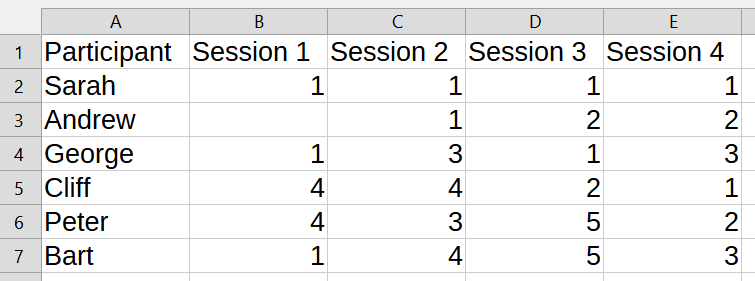

New Group Finder - by Dan Harper
(Hi Caroline!)
This is a web app that tries to find new ways to form groups out of a list of people.
To use it, you will need a .csv file (created using Excel, Google Sheets, etc.) that looks like this:
The first column header must be "Partipant" and the other column headers must fit the format "Session #"
For example this input tells us that the groups for Session 1 were:
1). Sarah, George, and Bart
2). Cliff and Peter
3). Andrew missed Session 1
This web app will look for a new group with the fewest number of people who have already been in a group together.
A few detailed things to know:
1). It isn't alway possible to make a new group where no people have already been in a group together.
2). The approach in this web app uses randomness. If you run it more than once, you will get a different result. It isn't gauranteed that this web app will find the best new group on the first try
3). One of the boxes below lets you set a max amount of time to spend looking for a new group. For relatively simple cases (for example, less than 30 people, less than 5 previous groups), 10 seconds is plenty and more time won't help. For more complicated cases, more time can help, but there's no value in running this with a very long time limit (it would be better to run it more than once with shorter time limits)
4). If you want to see what's going on under the hood, right click the page, then click "inspect", then click "console"
When you're ready, set the two numbers below and click the "Choose File" button and upload you're csv
It might take a few seconds for the button to appear
While you're waiting for the button to appear, the number inputs below might not be very responsive